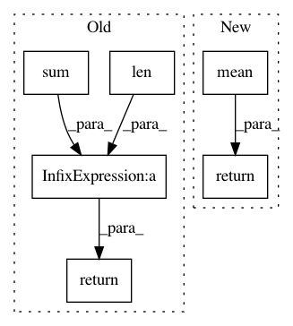

5240e8ed8e7ac4fd805f3ca6a858375b368d9406,datasketch/hyperloglog.py,HyperLogLogPlusPlus,_estimate_bias,#HyperLogLogPlusPlus#Any#Any#,261
Before Change
def _estimate_bias(self, e, p):
bias_vector = _bias[p - 4]
nearest_neighbors = self._get_nearest_neighbors(e, _raw_estimate[p - 4])
return sum([float(bias_vector[i]) for i in nearest_neighbors]) /\
len(nearest_neighbors)
def count(self):
num_zero = self.m - np.count_nonzero(self.reg)
if num_zero > 0:
After Change
bias_vector = _bias[p - 4]
estimate_vector = _raw_estimate[p - 4]
nearest_neighbors = np.argsort((e - estimate_vector)**2)[:6]
return np.mean(bias_vector[nearest_neighbors])
def count(self):
num_zero = self.m - np.count_nonzero(self.reg)
if num_zero > 0:
In pattern: SUPERPATTERN
Frequency: 4
Non-data size: 6
Instances
Project Name: ekzhu/datasketch
Commit Name: 5240e8ed8e7ac4fd805f3ca6a858375b368d9406
Time: 2015-06-25
Author: ekzhu@cs.toronto.edu
File Name: datasketch/hyperloglog.py
Class Name: HyperLogLogPlusPlus
Method Name: _estimate_bias
Project Name: inspirehep/magpie
Commit Name: 8592777b126908e3205cfb8371744ed359e4b04e
Time: 2016-01-11
Author: jan.stypka@cern.ch
File Name: magpie/base/inverted_index.py
Class Name: InvertedIndex
Method Name: get_last_phrase_occurrence
Project Name: inspirehep/magpie
Commit Name: 8592777b126908e3205cfb8371744ed359e4b04e
Time: 2016-01-11
Author: jan.stypka@cern.ch
File Name: magpie/base/inverted_index.py
Class Name: InvertedIndex
Method Name: get_first_phrase_occurrence
Project Name: hyperopt/hyperopt
Commit Name: c6f3c1d6629fa0eca227efcd1e7afde9a001fd3f
Time: 2014-01-19
Author: james.bergstra@gmail.com
File Name: hyperopt/criteria.py
Class Name:
Method Name: EI_empirical